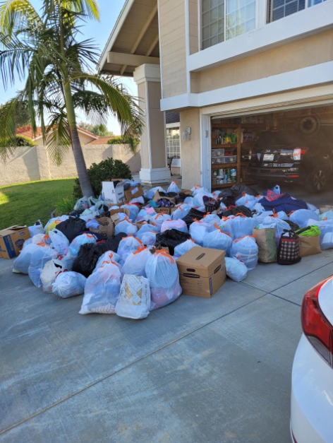
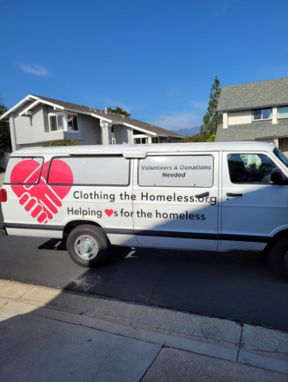
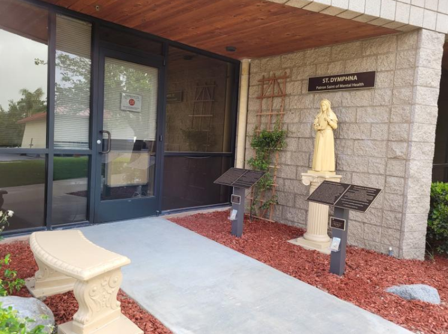

Core Skills
Microsoft Excel
Data analysis and financial modeling
Adaptability
Quick learner across diverse environments
Leadership
Team management and project coordination
Time Management
Efficient prioritization and execution
Marketing & Design
Photoshop, Photopea, social media strategy
Customer Service
Client relations and satisfaction
Experience
Marketing and Development Intern
Vocational Visions
Mission Viejo, CA
- Consolidated and organized years of donor records and fundraising data into a centralized database, improving accessibility, record accuracy, and team efficiency
- Utilized DonorPerfect CRM to manage donor relationships, maintain contact records, and support targeted email and direct-mail marketing campaigns
- Assisted in creating promotional videos and capturing content for community events to increase awareness of Vocational Visions programs and nonprofit initiatives
- Supported marketing and outreach efforts by promoting fundraising campaigns and community events through digital and in-person engagement
- Prepared and distributed donor outreach materials in support of fundraising campaigns and community partnerships
Marketing Intern
PIE Dev Studios
Remote
- Conducted market research and competitive analysis to refine brand positioning and support pre-launch growth strategy
- Developed data-informed community engagement initiatives to build early user traction prior to product release
- Collaborated with developers and the marketing team in weekly strategy meetings to align launch goals
- Transform long-form studio blog content into high-engagement Instagram marketing visuals and posts using Photoshop and Photopea
- Contribute to product refinement by participating in structured user feedback sessions to improve gameplay quality
Head Server
Chloe's Kitchen
Santa Cruz, CA
- Manage high-volume service operations while maintaining customer satisfaction and efficiency
- Coordinate between front of house and kitchen staff to optimize order flow and reduce service delays
- Resolve customer concerns professionally to uphold brand reputation
- Operate POS systems and handle payment processing accurately
- Oversaw end-of-day cash reconciliation and balanced register totals to maintain financial accuracy and accountability
Salesperson
Depop (Self-Employed)
- Operated a Depop storefront, managing product listings, pricing, and customer communication
- Created engaging product listings with detailed descriptions and photography
- Provided consistent customer service to build positive reputation
Shift Lead
Yogurtland
Lake Forest, CA
- Led store operations during shifts, ensuring smooth workflow and optimal customer service
- Managed inventory, tracked stock levels, and placed orders
- Managed cash handling and prepared financial reports with accuracy
- Trained and supervised team members to ensure efficiency and customer satisfaction
- Demonstrated leadership by resolving problems and ensuring store profitability
Courtesy Clerk
Stater Bros. Markets
Lake Forest, CA
- Provided excellent customer service, assisting shoppers with product locations
- Maintained store organization through routine cleaning and cart management
- Developed product knowledge to assist customers efficiently
Featured Projects
Clothing Drive Initiative
Jan 2021 - Dec 2022


- Led and organized a clothing drive at local church for two years
- Partnered with Clothing the Homeless, Laura's House, Salvation Army, and South County Outreach
- Successfully collected and distributed over 250 bags of clothing to homeless individuals
- Utilized video announcements and community engagement to maximize donations
- Coordinated volunteers and handled distribution logistics
Saint Dymphna Memorial
Jan 2022 - Jan 2023

- Designed and planned a permanent shrine for Saint Dymphna, the Saint of Mental Health
- Secured over $6,000 in funding through successful fundraising initiatives
- Managed project finances and budgeting while maintaining high standards
- Worked closely with church leadership, contractors, donors, and volunteers
- Directed all aspects from planning to execution, coordinating materials and timelines
- Quickly resolved unexpected site challenges by reorganizing construction plans
Nike Sports Nutrition Market Strategy
Oct 2025 - Nov 2025
- Developed a detailed market entry strategy proposing Nike's expansion into the sports nutrition industry, focusing on performance-focused consumers as well as college and professional athletes
- Conducted market research and competitive analysis to get an overview of industry trends, market opportunities, consumer behavior, and positioning against already established supplement brands
- Performed a SWOT analysis and identified strategic opportunities, market risks, and competitive challenges to support long-term business growth
- Designed an integrated marketing plan including product positioning, pricing strategy, distribution channels, partnership opportunities, and customer acquisition initiatives
- Developed measurable business objectives, revenue projections, implementation timelines, and key performance indicators to evaluate marketing effectiveness
- Presented data-driven recommendations through presentations, applying strategic planning and business communication skills to support a mock product launch
Healthcare Systems Efficiency & Equity Analysis
Sep 2025 - Dec 2025
- Conducted in-depth research on the U.S. healthcare system, analyzing the tradeoffs between operational efficiency, cost management, and equitable access to care
- Evaluated healthcare policies and industry trends using both qualitative and quantitative research to identify opportunities for improving patient outcomes and system performance
- Analyzed real-world healthcare challenges by comparing public and private healthcare models, supporting evidence-based recommendations
- Synthesized complex research findings into a professional report and 15 minute presentation, effectively communicating insights to academic audiences
- Applied critical thinking and data analysis to healthcare resource allocation, accessibility, and long-term sustainability
- Strengthened analytical, research, and problem-solving skills through the evaluation of healthcare systems, policy impacts, and organizational decision-making
Education
University of California, Santa Cruz
Bachelor's Degree in Business Management Economics
Skills: Microsoft Excel, Microsoft Word, Data Analysis
El Toro High School
Activities: National Honors Society, Varsity Tennis, California Scholarship Federation
Skills: AutoCAD, SOLIDWORKS
Get In Touch
Currently seeking full-time opportunities in Marketing, Brand Strategy, and Growth. Let's connect!
📧 marcg928@gmail.com